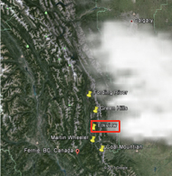
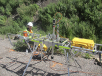
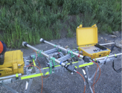
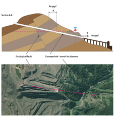
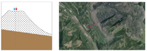
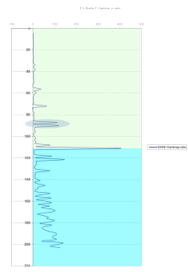

Efficacy test of the application of ADR technology in Elkview coal mine, Canada
Project aims
The aim of this project was to test the efficacy of the ADR technology in a number of different targets in the coal mine in Elkview, Canada. The field geophysical survey was conducted in July 2013 by Adrok on behalf of Teck Resources Limited (“TRL”) in Elkview property. Data was collected by Adrok’s survey crew in three different sites with individual objectives in each of these. The objective in the first site was to locate the conveyer belt tunnel and the region of the fault running through the mountain. In the second location the target was to locate the edge of the original rock layer and the depth of the ground water. And finally, the objective of the third site was to identify the depth of the original bedrock beneath the overlying unconsolidated dump material.
Exploration/Project challenges
The main challenge in this project was to ascertain if ADR technology could locate the conveyer belt tunnel.
Geological context
Elkview is located approximately 3km east of Sparwood in south-eastern British Columbia1. The coal mine at Elkview in the Elk Valley area is one of the five large open-pit coal mines that are operated by Teck Coal Limited2. The mine at Elkview is part of the Crowsnest coalfield, which is in the Fernie Basin, a broad north-trending synclinorium2. The host rocks in the Crowsnest district are of the Jurassic Kootenay formation3. The strata have been extensively folded and faulted helping in the increase of the apparent thickness of the seams in some areas3.
 Figure 1: Location map of Elkview site (Google Earth).Adrok’s results
Adrok applied the interpretation techniques of dielectric constant, harmonic analysis, Stare analysis, P-scan imaging, energy response and weighted mean frequency (WMF) logs in order to identify the individual targets in the three different sites.
1st site
In this site Adrok conducted both horizontal and vertical scans in order to try and find the tunnel and the fault running through the mountain (Figure 2).
  Figure 2: ADR field equipment during the vertical scanning (above) and the horizontal scanning (below) in the first site.  Figure 3: Graphical representation of the first target (above) and plan view of the site in Elkview (Google Earth) (below).Based on the processing and interpretation of the horizontal scans, a boundary between the surrounding rock and the tunnel has been interpreted to exist at the survey point 26-28m along the scan line. The depth (distance within the mountain) of the tunnel has been estimated to be 130m +/- 20m based on the Stares analysis, dielectrics, energy response and WMF logs. Low DC values (indicative of air presence) are observed at 110-116m depth (Figure 4). On the other hand, Stares analysis (i.e. the individual stare scans were combined into a transect scan and the amplitudes of the received energy were analysed), energy response and WMF logs suggest a depth of 130-160m (distance within the mountain). This disparity could be caused by manual tracking errors. In addition, a zone of low returned energy is correlated at a depth of 190-240m (distance within the mountain) across the scan line, which has been interpreted as a fault zone.
The energy response and weighted mean frequency logs have been extracted from the vertical dataset of scans to find the roof and the slope of the conveyer belt tunnel. According to their interpretation, the roof of the tunnel is suggested to be at a depth of 48m (vertically) and its slope roughly 020° degrees.
2nd site
Water at the second survey site is interpreted on the basis of correlating an increasing dielectric with an increasing WMF. An interval of increasing dielectric appears in the depth range of 45m and 60m between survey points 0m and 25m of the survey scan line, which was correlated with an increasing WMF (a further indicator of a wet layer) at the same depths (Figure 6). Further evidence of this was seen in the E-ADR harmonics extracted from a P-scan image (Figure 9).
The depth of the original rock layer was identified at 30m depth in the survey point of 50m by correlating a peak in WMF log (indication of a change in the geology at this point) with a change in the E-ADR image(Figures 7 and 9). Processed P-scan image clearly shows a fault zone between 20m and 35m of the survey scan line (Figures 8 and 9).
3rd site
 Figure 10: Graphical representation of the target and plan view of the location of the third site in Elkview (Google Earth).Regarding the third survey site, Adrok combining the results of DCs, harmonics, energy response and WMF logs suggest a boundary between the overlying unconsolidated waste material and the underlying original rock at a depth of 111m +/- 30m. This error may be due to the compaction of the lower portion of the dump material or the similarity in composition of the dump material and the underlying rock, which may case similar energy returns and complicating the identification of the boundary.
 Figure 11: Results of one of the interpretation tools (Harmonics: E-Gamma p-ratio) presenting the suggested depth of the boundary (large spike) between the bedrock and the unconsolidated waste material.Benefits for client
On the occasion of this project, Adrok demonstrated that its technology can find applications not only in lithology identification and mapping projects (e.g. coal layers) but also, in geotechnical works to map different volumes (e.g. to locate tunnels, old mine workings, etc.) before starting the process of digging the ground. Consequently, ADR technology is a faster, greener, cheaper and non-destructive geophysical technique, which can be applied in a variety of different cases depending on the clients’ needs.